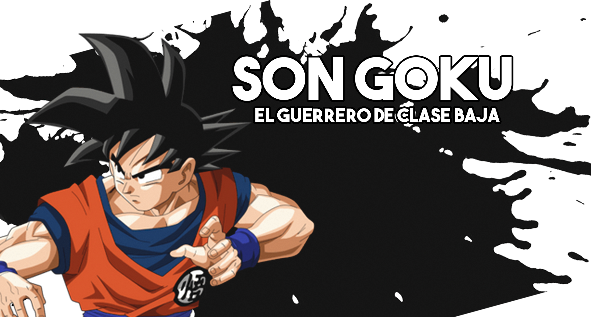

PERSONAJES PRINCIPALES

Son Goku (孫そん悟ご空くう, Son Gokū, Sūn Wùkōng), conocido como Gokú en Hispanoamérica, es el protagonista principal del manga y anime de Dragon Ball creado por Akira Toriyama.
Su nombre real y de nacimiento es Kakarotto (カカロット, Kakarotto «Kacarrot» en alfabeto saiyano) y es uno de los pocos saiyanos que lograron sobrevivir a la destrucción total del Planeta Vegeta del Universo 7.
Es el segundo hijo de Bardock y Gine, hermano menor de Raditz, nieto adoptivo de Son Gohan, esposo de Chi-Chi, padre de Son Gohan y Son Goten, a su vez también es el abuelo de Pan y ancestro de Son Goku Jr.
Vegeta IV (ベジータ四世, Bejīta Yon-sei), reconocido como el Príncipe Vegeta (ベジータ王子, Bejīta-ōji) y conocido mayormente como Vegeta (ベジータ, Bejīta), es el deuteragonista de Dragon Ball Z, Dragon Ball Z Kai y Dragon Ball Super.
Es el hijo mayor del rey Vegeta III, así como el príncipe más reciente de la familia real saiyana y uno de los pocos supervivientes tras el genocidio saiyano del planeta Vegeta del Universo 7, a manos de Freeza. Es el eterno rival de Son Goku, hermano mayor de Tarble, el esposo de Bulma, padre de Trunks y Bra y ancestro de Vegeta Jr.
Son Gohan (孫そん悟ご飯はん, Son Gohan), Son Gohanda en su tiempo en España, o simplemente Gohan en Hispanoamérica, es uno de los personajes principales de los arcos argumentales de Dragon Ball Z, Dragon Ball Super y Dragon Ball GT. Es un mestizo entre saiyano y humano terrícola. Es el primer hijo de Son Goku y Chi-Chi, hermano mayor de Son Goten, esposo de Videl y padre de Pan.
Piccolo (ピッコロ, Pikkoro, Piccolo en namekiano en idioma namekiano) o Piccolo Jr. (ピッコロ・ジュニア, Pikkoro Junia), también conocido bajo el seudónimo de Ma Junior (マジュニア, Ma Junia), es uno de los personajes principales que aparece en el manga y anime de Dragon Ball y sus correspondientes secuelas.
Es un namekiano que surgió tras ser creado en los últimos momentos de vida de su padre, siendo su actual reencarnación. Aunque en un principio fue el archienemigo de Son Goku, con el paso del tiempo fue haciéndose menos malvado hasta finalmente convertirse en un ser bondadoso y miembro de los Guerreros Z. A través del tiempo, también comenzó a tomarle cariño a su discípulo Son Gohan, a quien veía como una especie de "vástago" y formando un lazo de amistad con este.
Broly (ブロリー, Burorī) es uno de los pocos hombres saiyanos de raza pura provenientes del planeta Vegeta del Universo 7 supervivientes, hijo biológico de Paragus y reputado como un mutante saiyano legendario (伝説のサイヤ人, Densetsu no Saiya-jin) en su universo, existiendo como la contraparte masculina del Universo 7 de Kale.
Él fue desterrado a temprana edad de su planeta natal por órdenes del rey Vegeta, quien mandó al joven saiyano a otro mundo fronterizo conocido como Vampa siendo muy joven debido a que este tenía envidia de que este fuera más poderoso que el príncipe Vegeta IV, lo que ocasionó un profundo rencor en su padre contra el rey y su familia.
Es considerado como la reinvención y equivalente primario del Broly visto previamente en las películas de Dragon Ball Z, el cual aparece por primera vez como el antagonista principal de la película Dragon Ball Super: Broly. Frecuentemente se le suele denominar bajo la designación oficial de Broly:(ブロリー：ＢＲビーアル, Burorī: Bīaru) para diferenciarlo de su homólogo original.
Beerus (ビルス, Birusu), titulado oficialmente como el Dios de la Destrucción Beerus (破壊神ビルス, Hakai-shin Birusu) por su cargo, conocido también como Beers, o Bills en Hispanoamérica e inicialmente en España, es un personaje que fue introducido en la película Dragon Ball Z: La Batalla de los Dioses, donde es el antagonista principal de la película, y que aparece en el manga y anime de Dragon Ball Super como un personaje principal. Ocupa el puesto de Dios de la Destrucción de todo el Universo 7 siendo el lugar donde se desarrolla la historia de Dragon Ball.
Whis (ウイス, Uisu) es uno de los hijos del Gran Sacerdote, hermano menor de Vados, Korn y Kus. Es el ángel guía encargado de asistir y servir como maestro al Dios de la Destrucción del Universo 7, Beerus.
Tuvo su primera aparición en la película Dragon Ball Z: La batalla de los dioses y es un personaje recurrente en el anime y manga de Dragon Ball Super.
VILLANOS
Freeza (フリーザ, Furīza), conocido también como Freezer, es un alienígena mutante, brutal dictador y líder del Imperio Galáctico del Universo 7 con el apoyo estratégico en secreto de su padre Cold. En las películas también lidera este imperio su hermano mayor Coola. Además de ser considerado como la contraparte de Frost del Universo 6.
El tirano emperador es el responsable de la muerte de Bardock y Gine, los padres de Son Goku, del Rey Vegeta, así como de la mayor parte de su especie, los saiyanos del Planeta Vegeta, desembocando en una limpieza étnica conocida popularmente como el Genocidio saiyano.
Aparece como el antagonista principal del Arco de Freeza, como un antagonista secundario del Arco de los Androides y Cell de Dragon Ball Z, para volver resucitado como antagonista principal en el Arco de la Resurrección de 'F' (así como su versión de película Dragon Ball Z: La Resurrección de 'F'), regresando como compañero/aliado condicional de los Guerreros Z y Goku bajo el Equipo Universo 7 en la Arco de la Supervivencia Universal de Dragon Ball Super, y estando en el anime spin-off Dragon Ball GT como un antagonista secundario en la Arco del Androide Definitivo. Es por todo ello y mucho más, por lo cual es considerado como el villano insignia de la franquicia Dragon Ball, el archienemigo de Goku y el peor rival de su antiguo aliado, el príncipe saiyano, Vegeta IV.
Cell (セル, Seru), conocido como Célula en España, es un bioandroide creado por la computadora del Dr. Gero, quien vino del futuro de la línea 3 con la intención de vengarse de Goku por haber acabado con el Ejército del Listón Rojo, y con ello el sueño de todo villano: dominar el mundo. Es el antagonista principal del Arco de los Androides y Cell.
Está fabricado a partir de células de Goku, Piccolo, Vegeta, Freeza y su padre el Gran Rey Kold. Una minicomputadora en forma de insecto registró los movimientos y técnicas de estos luchadores, haciendo que Cell sepa usar todos sus ataques, y por ende, predecir la mayoría de sus movimientos. Cell puede absorber la energía vital de todo ser viviente con un aguijón al final de la cola, y para alcanzar la perfección de su cuerpo debe absorber a los androides Nº17 y Nº18. Para cumplir su objetivo, mató a Trunks y robó su Máquina del tiempo para viajar al pasado.
Ya en el pasado, choca contra las versiones de Son Goku y sus compañeros en un intento por completar su desarrollo al absorber a los Androides 17 y número 18 de esta línea temporal, objetivo que finalmente consigue. Por diversión crea un "torneo" llamado los Juegos de Cell buscando simplemente a un oponente que pudiera derrotarlo bajo la amenaza de asesinar a todos los habitantes de la Tierra lo que desata un brutal enfrentamiento contra Son Goku y sus amigos, que termina costando la vida del saiyano, pero en el cual acaba siendo eliminado por su hijo, Son Gohan el cual se ve forzado a superar sus propios límites alcanzando un poder inimaginable.
Majin-Boo (Bueno) (魔人ブウ (善), Majin Bū (Zen)), conocido como Bubú en España y como Majin-Boo desde Dragon Ball Super, es el resultado del Majin-Boo que realiza la fisión para separarse en dos mitades: una buena y una mala, existiendo como la parte bondadosa de la entidad.
En la actualidad, tras haber absorbido al Gran Kaio-shin del Universo 7 como Pequeño Boo, esta deidad se convirtió en el lado más dominante en Majin-Boo como Boo Gordo, siendo que el primero aún vive dentro de su organismo a través de su alma. Luego de que el ahora llamado Mr. Boo despertara en el Arco del Prisionero de la Patrulla Galáctica del manga de Dragon Ball Super, la Patrulla Galáctica le ordenó a su hipnotizador y aromaterapeuta oficialmente licenciado que desvelara los recuerdos del Kaio-shin dentro del Majin, quien empezó a identificarse a sí mismo como el Gran Kaio-shin después de que este tomara el control de su cuerpo para enfrentarse a Molo al recuperar su memoria y, posteriormente, su apariencia física.
Molo (モロ, Moro), popularmente conocido bajo el infame seudónimo del Astrófago Molo (星喰いのモロ, Hoshikui no Moro), es un malvado hechicero y mago genocida extremadamente poderoso que amenazó con erradicar todas las formas de vida existentes en el Universo 7 hace más de diez millones de años hasta ser derrotado por las deidades Kaio-shin y ser encerrado en la prisión del cuartel general de la Policía Galáctica, la cual es la Patrulla Galáctica en la actualidad.
Aparece por primera vez como el antagonista principal del Arco de los Prisioneros de la Patrulla Galáctica del manga de Dragon Ball Super.
Gas Heata (ガス・ヒータ, Gasu Hīta) es el sicario del Ejército de Heata, así como el cuarto y más peligroso hermano con respecto a su fuerza e importancia. Tras invocar al Dragón Divino Trombo, Gas se convirtió en el actual Guerrero Supremo del Universo 7.
Es uno de los antagonistas principales en el Arco del Superviviente Granolah de Dragon Ball Super.